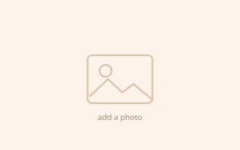

Arduino Radar
An Arduino-based radar system using an ultrasonic sensor mounted on a servo motor to detect objects at different angles.
Built with
Builds
Things I have built, the videos I made while building them, and the CAD models behind them.
This is the other half of the way I pay attention. Where the writing takes an idea apart on paper, this takes it apart on a breadboard — mostly Arduino, mostly sensors and wire and code that refuses to compile the first time.
Each build below has its own tab: what it does, what it is made of, and the video from the bench. They all live on my YouTube channel too. The Designs page has the CAD models.
Featured work
Real things I have made with sensors, wire, and code that refused to compile the first time.
An Arduino-based radar system using an ultrasonic sensor mounted on a servo motor to detect objects at different angles.
A step-by-step demonstration of building an Arduino radar, showing the electronic components, wiring, and setup used for the project.
A tutorial demonstrating how to build an Arduino-controlled mini crane, including the assembly and connection of its electronic components.
An Arduino project that uses an RGB LED to display the colours of the Indian national flag — saffron, white, and green.
Highlights
Exhibitions, competitions, and builds that got noticed.

Add what the project was and who was on the team. (Taken from your Letter to 2024 — check it and rewrite in your own words.)
What you built for it, what it had to do, and how far you got.
Not every highlight is a prize. A build that finally worked counts.